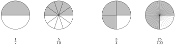

Understand the idea behind the long division algorithm.
Perform mental division calculations correctly.
So far, we’ve covered addition, subtraction, and multiplication, which leaves us with division. Division, as with all of the other arithmetic operations, has multiple interpretations and visualizations. The two interpretations come out of the fact that \(A\) groups of \(B\) and \(B\) groups of \(A\) both have the same numbers of objects in them.
Activity31.1.Divisions as Making Groupings.
We will start by looking at division as making groupings. This was the way we looked at division earlier when we were working with fractions. The calculation \(a \div b\) (which is the same as gives the number of groups of size \(b\) that can be made if you start with \(a\) objects. Here is the diagram we used to represents \(6 \div 2\) from earlier:
This way of looking at division leads to a very natural interpretation of fractions as parts of a whole. If we are short pieces to make a full group, then we use that to determine the fractional part.
Try it!
Draw a diagram that shows the calculation \(12 \div 3\) using the concept of making groups.
Solution.
Activity31.2.Division as Equal Distribution.
An alternative perspective for division known as equal distribution. The idea here is that you are attempting to create a specific number of equal-sized groups. In this case, \(a \div b\) means to determine how many elements will be in each group if you make \(b\) equal groups. Here is a diagram:
Sometimes, in order to create equal groups, you need to break some of pieces into parts. In this case, the fractional part comes not from having an incomplete group, but the necessity of dismantling a whole object in order to allow everyone to have an equal share.
Try it!
Draw a diagram that shows the calculation \(12 \div 3\) using the concept of equal distribution.
Solution.
Both of these concepts of division can be used to understand why division by 0 is undefined. Let’s look at the meaning of the division calculation \(5 \div 0\) as an example. Using the idea of groupings, the question is "How many groups of size 0 are needed to use up 5 objects?" And with groupings of size 0 you’re never going to use up all of the objects. If we use equal distribution, the question is "How many objects does each person get if there are 0 people?" Again, the question really doesn’t make sense. How many objects does nobody have?
And so this "rule" that dividing by is "undefined" is just representation of the idea that the division concept doesn’t make sense when you divide by 0. It is "undefined" because there is no meaningful answer to the question.
Both of these perspectives of division are valid and they are related to each other. We are going to be focusing on making groupings because the connection to parts of a whole is stronger.
Many students have memorized the long-division mantra at some point: "Divide, multiply, subtract, bring down, repeat." And by learning to execute these steps, students learn how to perform long division problems. But what is actually happening as these steps are being executed? Very few people are able to explain what is happening conceptually. And since the emphasis of this book is mathematical thinking and understanding, we’re going to break it down and take away the mystery of long division.
The problem of long division is that you’re given a large collection of objects and asked how many groups of a specific size can be made from that collection. One way to get the answer is by "counting up" to that value. For example, if we wanted to know how many groups of could be made from objects, we could simply count up to it by doing multiples of 4:
And from this, we can see that we can make groups of out of objects.
This theoretically works for any number, but it’s quickly seen as grossly inefficient. Let’s say that we were given 336 objects instead. Trying to count as above is not a smart approach because it will simply take a very long time to get the target number.
Here is where we can invoke our mathematical thinking and problem solving skills. We want to count faster, but we want to do it in an organized manner. Based on our knowledge of numbers, a reasonable approach would be to count in groups of instead of groups of We can quickly see that a group of requires pieces, and use those groupings instead to speed up the process. Notice that we crossed out the last one because is larger than so we don’t have enough pieces to make another groups. But we’re also not done yet because we’ve only accounted for out of the pieces. We can see that there are pieces left, which we know corresponds to another groups. And so in total, there are \(80 + 4 = 84\) groups of that can be made with objects.
Activity31.3.The Concept Behind Long Division.
One of the challenges with these calculations is figuring out the "correct" amount of work to show. With practice, these calculations can be done mentally without too much difficulty. But it takes some time to get there. If you wanted to write out multiples of numbers as above as scratch work, that would be acceptable. But for the purposes of these division problems, the following is the minimum presentation expectation:
The long division method is precisely this grouping process, but written in a far more compact style. The trick to unwinding it is to think past the digits and contemplate the process as working with numbers. We will follow the steps of the long division calculation \(336 \div 4\) and track the logic of the calculation we just completed.
So the underlying logic of long division is to make the big groups first and then work your way down to smaller groups.
Activity31.4.Mental Division.
Something else happens when you start to open up that logic. The mental calculations actually become much simpler. In the same way that it is difficult for your brain to keep track of all of the symbols when adding in columns, long division is an extremely complicated process if you need to remember both the values and locations of all the digits. But if you think about them as numbers, you significantly simplify the logic and (with a little bit of practice) this becomes a much simpler mental calculation.
Draw a diagram that shows the calculation \(15 \div 3\) using the concept of making groups.
2.
Draw a diagram that shows the calculation \(15 \div 3\) using the concept of equal distribution.
3.
Draw a diagrams that represent the product \(3 \cdot 5\) as groups of and as groups of
4.
Based on the diagrams that you’ve created, pair up each division concept with one of the \(A\) groups of \(B\) diagrams. This shows how both division concepts represent the same multiplication calculation.
Sometimes, a division calculation is "close" to being something extremely easy. For example, the calculation \(495 \div 5\) is very close an easily calculated \(500 \div 5\text{.}\) But since it’s easy to see that \(500 \div 5\) is and that is one group of less than it is not too difficult to see that \(495 \div 5 = 99\) (1 group short of 100 groups of 5).
This method of finding approximate answers and adjusting is commonly done in mental arithmetic when it’s possible. But it’s a good way to quickly calculate the answer in those situations.
Practice your mental arithmetic by performing the following calculations.
It’s not always the case that the number will be "one away" from a nice value. Sometimes, it may be two or three away. But with some practice and experience, you can learn to spot those values, too.
Practice your mental arithmetic by performing the following calculations.
Sometimes the "nice" value isn’t quite as nice, but is still helpful. Instead of being near a multiples of these are examples that are near multiples of The same ideas still apply. These are a bit trickier because you really need to be comfortable with your multiplication table to do itself.
Algebra is a skill, which means it requires practice to become proficient. But it will take more than rote repetition to get there. Deliberate practice is the thoughtful repetition of a task. For each of these sections, you will be given a list of specific skills or ideas to focus on as you practice thinking through the problems.
Focus on these skills:
Think through the division by making groupings.
Perform the calculation mentally before writing out the minimal presentation in this section.
We have now completed a tour of all four arithmetic operations: addition, subtraction, multiplication, and division. We have seen that addition and subtraction are closely related to each other, and that multiplication and division are closely related to each other. This touches on an idea that was discussed much earlier, but is worth reviewing now that we have more knowledge and experience.
In the early parts of this book (Definition 3.5 and Definition 7.1), we introduced certain properties of addition and multiplication:
The commutative properties: \(a + b = b + a\) and \(a \cdot b = b \cdot a\)
The associative properties: \((a + b) + c = a + (b + c)\) and \((a \cdot b) \cdot c = a \cdot (b \cdot c)\)
The fact that these properties hold for addition and multiplication, but not for subtraction and division, is a signal that addition and multiplication are somehow more "basic" or more "fundamental" than the other operations. And if we think back to the work that we’ve done over the last several sections, we can start to see how that has played out in our analysis.
Addition is closely tied to counting. When we add numbers, it can be viewed as a process of counting up by a certain amount. We saw this when we were combining groups of objects together (whether using blocks, integer chips, and even movements on the number line). But when we subtracted, we were still required to count up to a number in some form. We had to count out the right number of negative chips, or we had to count up to the right number of objects to take away, or we had to count up to the right number of movements. And so in all situations, our core addition concept was part of the process of subtracting.
Something similar happened with multiplication and division. The process of division required us to make groups that built up to a specific value. We saw this explicitly when we were counting out multiples of numbers in the division problems. We also saw this visually when we took individual objects and turned them into groups of objects (multiplication is represented as groups of objects).
As you continue onward in your college level mathematics, you may start to see further hints of this idea. For example, in the study of logarithms, you’ll see that the primary relationship is between addition and multiplication, and the relationship between subtraction and division turns out to be nothing more than a fancy way of rewriting that relationship. Those calculations are included below. It’s okay if you do not really understand it right now. Just focus on the relationships between addition and multiplication and how they relate to the relationships between subtraction and division.
The sum of logarithms: \(\log(a) + \log(b) = \log(a \cdot b)\)
The difference of logarithms: \(\log(a) - \log(b) = \log( \frac{a}{b} )\)
Section31.5Going Deeper: Remainders and Decimals
In this section, we mostly avoided remainders so that the focus would be on the primary concept of division. We’re going to take a deeper dive into this topic to see how this idea relates back to one of the core concepts of fractions, and also take a deeper look at the decimals associated with those fractions.
It’s often the case that division problems don’t work out evenly. In elementary school, children learn that when you have leftover pieces, it’s called a remainder. And in the long division process, they are often taught to write their answers with an R, so that a calculation like \(11 \div 3\) results in \(3 \, \text{R}2\text{.}\) What’s interesting about this notation is that there’s no other place in mathematics where we use it.
The main tool for working with remainders is the idea of parts of a whole, which we discussed in detail in Section 17.1. The basic idea is that the fraction means to take a whole unit (often represented by a circle) and cut it into pieces, and then the quantity is the amount you would have if you had of those pieces. breaking a whole unit into pieces allows us to make groupings and equal-sized distributions when the calculation doesn’t work out evenly.
For example, in the calculation \(11 \div 3\text{,}\) if we were thinking about making groupings, we would have three full groups and two out of three pieces to make another group. The language of "two out of three pieces" is exactly mirroring the language we use with parts of a whole. Here’s what looks like as a parts of a whole diagram:
This gives us the explicit image of having three full groups and two out of three pieces needed for another group. If we wanted to view this as equal distribution, we would have a diagram that looks more like this:
In both situations, the need for having parts of a whole comes up naturally.
In Section 22.2, there were a couple exercises on the worksheet that discussed the conversion of fractions to decimals. In those sections, we simply assumed that you had sufficient familiarity with decimals that you would be able to come up with the answers and they would make sense to you. But we didn’t really talk about what was going on with those decimals.
Recall that decimals are really just fractions with powers of ten in the denominator. And so in some sense, decimal expansions are just another way of trying to express a division calculation. In most practical settings, it’s far more likely that remainders will be expressed as decimals instead of fractions. There are many reasons for this, including the simple fact that we use computers and calculators and they generally give us decimal answers.
Some fractions have terminating decimal expansions. This means that at some point the decimal stops and gives us an exact answer. The simplest examples are the ones where we start with a power of ten in the denominator. For example, \(\frac{3}{10} = 0.3\) and \(\frac{51}{100} = 0.51\text{.}\) These are quite literally the direct translation of fractions to decimals.
In other cases, we may not initially have a power of ten in the denominator, but we can get there by finding a different representation of that fraction. Here are a couple examples of this:
In both of these situations, there’s a way to cut up our parts of a whole diagram so that we have a power of te pieces. We can visualize this with but with it’s very difficult to see all subdivisions so we didn’t draw all of them. But you should get the general idea from the diagram.

Next, we have fractions for which we simply cannot use integers to get that representation. For example, with the fraction \(\frac{1}{3}\) there is no integer value \(x\) so that is equal to a power of ten:
We can see that no matter how far out we go, we’ll never get an integer answer.
These values were written as mixed numbers for a reason. That reason is that it makes it clear that even though there is no integer value, there’s a definite pattern that’s developing. There is some number of 3s but then there’s always one out of three pieces left over. And this happens over and over again. Because of this, we know that the decimal expansion for \(\frac{1}{3}\) is a repeating decimal.
The idea of a repeating decimal is that there is some pattern of numbers that repeats indefinitely. The pattern is not limited to a single digit, nor does it have to start immediately after the decimal. The feature is that the decimal eventually falls into a fixed pattern. There are two notations for repeating decimals. The implicit notation leaves it to the person reading it to identify the pattern. For example, here is the decimal expansion of
In this case, the pattern is pretty easy to spot. But there’s also an explicit notation that specifically marks out the pattern. This is good for patterns that take longer to repeat:
We’re going to spend some time exploring the nature of these repeating decimals by thinking about fractions. Can we explain why those decimals repeat? If we look at the column of values we had for the fraction we can see that keeps appearing over and over again. The process being shown above in equations is a bit easier to understand in pictures. We are trying to calculate \(\frac{1}{3} = 1 \div 3\text{.}\) We will represent by a bar:
We want to divide this into three equal pieces. However, decimals constrain us to having to break things into ten pieces. So we’ll do that and do our best to create three equal groupings without breaking things up any further:
We get three groups and then one leftover piece. In order to try to create equal groupings, we’re going to need to break this piece up. But again, the limitation of using decimals is that we can only break this up into ten pieces. But taking one item and breaking it into ten pieces is exactly what we just did, so we already know the result. We’re going to end up with three more groupings, and then one leftover piece. And if we were to try to take that leftover piece and break it into ten again, it’s just going to be the same thing forever.
This pattern of breaking things into ten, dividing, and looking at the remainder is what leads to repeating decimals. Notice that breaking into ten pieces is the same as multiplying the number of pieces by ten, so that we can interpret this process as multiplying by ten, dividing, and looking at the remainder. We can see that the size of the remainder is what controls the next step in the process.
Let’s look at another example that has a little but more going on. Let’s say we were trying to get a decimal for \(\frac{2}{11}\)
The of the mixed number is our first decimal value, and the 9 in the numerator is our remainder. We can then repeat this process to get the next decimal:
But notice that we have a remainder of 2, which is a number that we’ve already seen. In fact, we explicitly see the \(\frac{2}{11}\) that we started with in the calculation. So we can return back to that value to create the loop that gives us the repeating decimal expansion!
We’re going to condense the notation a bit so that it takes up less space. Since each arrow represents multiplying by 10 and dividing by the denominator, we’re just going to give the answers at each step. So the above diagram can be reduced to this one:
Let’s take a look at an example with a longer pattern. Here is what we get when working with \(\frac{1}{7}\text{:}\)
In this case, we have a cycle that runs through every single remainder. This means that we have the full information about the decimal expansions when the denominator is 7. If we wanted the decimal expansion of \(\frac{2}{7}\) we start from the 2 and write down the integer parts of the mixed numbers in order: \(\frac{2}{7} = 0.\overline{285714}\text{.}\)
Different denominators will have different diagrams. Here is what the denominator of 6 looks like. Notice that we don’t reduce the fractions (because that changes the value of the numerator and the denominator).
In this case, there are three separate pieces, two of which repeat (but don’t repeat the entire chain) and one that terminates. So it’s possible to get denominators that multiple possibilities.
Here are a few questions to consider. If you were to be given some other denominator (such as 12):
Can you predict how many fractions will terminate and how many won’t?
Can you predict how many different cycles you will have?
Can you predict which cycles will have full loops and which ones will have partial loops?
You actually have all the tools you need to explore these questions. You may even be able to come up with some conjectures and have some explanations for why you think your ideas are correct. At this point, you may not have the tools to fully explain everything, but that’s part of the learning process. As you get interested in new ideas, that’s the starting point for developing new tools and new skills to try to find out more.